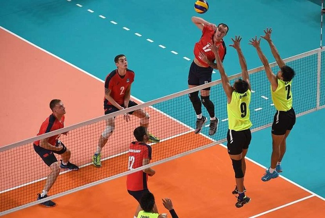
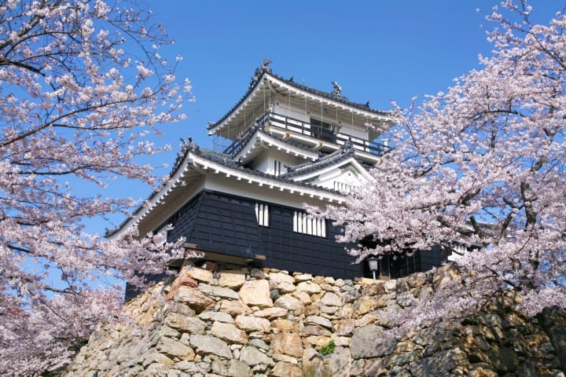

Voli

Permainan bola voli termasuk salah satu contoh dari cabang olahraga bola besar.
Bisa dikatakan, permainan ini masuk ke dalam kategori pertandingan karena melibatkan dua tim yang saling
berhadapan untuk mendapatkan hasil pertandingan.
Cara memainkan bola voli adalah dengan memukul bola agar melewati bagian atas net yang ada di tengah lapangan.
Agar mendapatkan skor, para pemain dalam satu tim harus mengarahkan bola ke area lawan,
sehingga bola terjatuh di daerah pertahanan lawan.
Pencetusnya adalah William G. Morgan yang merupakan guru pendidikan jasmani di Amerika Serikat.
Ia sangat terinspirasi dari permainan bola basket. Inspirasi tersebut dia dapatkan setelah bertemu
dengan James Naismith yang merupakan pencetus olahraga bola basket.
Awalnya, permainan ini ditujukan untuk para orang tua.
Namun, Morgan ingin sekali menyesuaikan antara olahraga dengan kemampuan fisik para orang tua.
Sebab tidak memungkinkan bagi orang-orang tua jika harus mengandalkan kekuatan fisik dalam waktu yang lama,
misalnya berlari.
Rendang
Rendang merupakan salah satu masakan Indonesia yang terkenal akan kelezatannya.
Rendang adalah masakan daging yang berasal dari Minangkabau Sumatra Barat Indonesia.
Proses memasak rendang dengan suhu rendah dalam waktu lama, menggunakan santan dan aneka rempah-rempah khas indonesia
yang sedikit pedas sehingga menambah ke khas an dan kelezatannya.
Dengan proses memasak yang begitu lama sehingga menghasilkan daging rendang yang empuk dan bumbu yang meresap ke daging.
Rendang juga terkenal merupakan makanan yang tahan lama dapat bertahan berminggu-minggu cocok digunakaan saat musim dingin,
semakin lama akan terasa makin lezat. Sehingga dimanfaat sebagai bantuan pangan bagi
korban bencana alam karena tahan lama dan kandungan gizinya.
Jepang

Jepang adalah sebuah negara Kepulauan yang terletak di Benua Asia bagian Timur (Asia Timur).
Sebagai Negara Kepulauan, Jepang memiliki sekitar 6.852 pulau besar maupun kecil.
Pulau-pulau utama Jepang diantaranya adalah Pulau Hokkaido, Pulau Honshu, Pulau Shikoku dan Pulau Kyushu.
Jepang juga merupakan salah satu negara yang memiliki garis pantai terpanjang di dunia yaitu sekitar 29.751 km2.
Pulau Honshu merupakan pulau Terbesar di Jepang. Ibukota Jepang yaitu Kota Tokyo terletak di Pulau Honshu ini.
Saat ini, Jepang merupakan Negara yang menduduki urutan ketiga sebagai Negara dengan Ekonomi terbesar
setelah Amerika Serikat dan China (Tiongkok). Pendapatan Domestik Bruto atau PDB Nomimal Jepang adalah US$ 5,231 triliun
dengan Pendapatan Per Kapita sebesar US$41.429,- pada tahun 2019.
Namun saat ini Jepang juga mengalami permasalahan penurunan jumlah penduduk,
angka kelahiran Jepang hanya mencapai 7 bayi per 1000 penduduk sedangkan angka kematiannya adalah
11,44 kematian per 1000 penduduk. Dengan demikian, tingkat pertumbuhan penduduk Jepang adalah Negatif
yaitu sekitar -0,37% (data tahun 2021). Berdasarkan data dari World Factbook,
jumlah penduduk Jepang di tahun 2021 adalah sebanyak 124.687.293 jiwa.